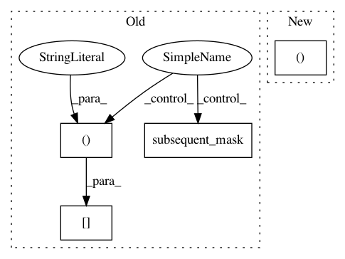

cde27bc0dad15b0bef4b0568f6ac1778920447e5,models/TransformerModel.py,TransformerModel,_prepare_feature,#TransformerModel#Any#Any#Any#,339
Before Change
// crop the last one
seq = seq[:,:-1]
seq_mask = (seq.data > 0)
seq_mask[:,0] += 1
seq_mask = seq_mask.unsqueeze(-2)
seq_mask = seq_mask & subsequent_mask(seq.size(-1)).to(seq_mask)
else:
seq_mask = None
After Change
att_feats, seq, att_masks, seq_mask = self._prepare_feature_forward(att_feats, att_masks)
memory = self.model.encode(att_feats, att_masks)
return fc_feats[...,:1], att_feats[...,:1], memory, att_masks
def _prepare_feature_forward(self, att_feats, att_masks=None, seq=None):
att_feats, att_masks = self.clip_att(att_feats, att_masks)
In pattern: SUPERPATTERN
Frequency: 3
Non-data size: 4
Instances
Project Name: ruotianluo/ImageCaptioning.pytorch
Commit Name: cde27bc0dad15b0bef4b0568f6ac1778920447e5
Time: 2019-04-07
Author: rluo@ttic.edu
File Name: models/TransformerModel.py
Class Name: TransformerModel
Method Name: _prepare_feature
Project Name: facebookresearch/Horizon
Commit Name: 247203f29b7e841204c76d922c1ea5b2680c3663
Time: 2020-12-08
Author: czxttkl@fb.com
File Name: reagent/models/seq2slate.py
Class Name: Seq2SlateTransformerModel
Method Name: _rank